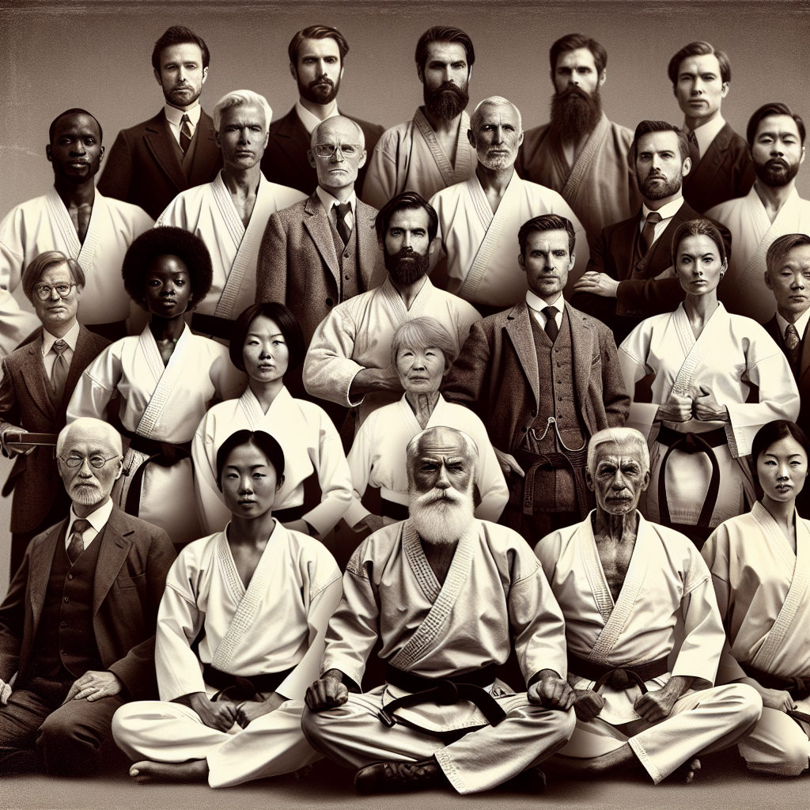

Our Historical Lineage
United Self Defense Academy (USDA) traces its roots directly from USSD Kenpo Karate, carrying forward the legacy and traditions established over decades. As an independent entity now, USDA honors the discipline, philosophies, and martial arts techniques inherited from the original USSD lineage.
Our focus remains on excellence in Kenpo Karate training, maintaining the core values of respect, self-discipline, and self-defense that have been passed down through generations of practitioners.
